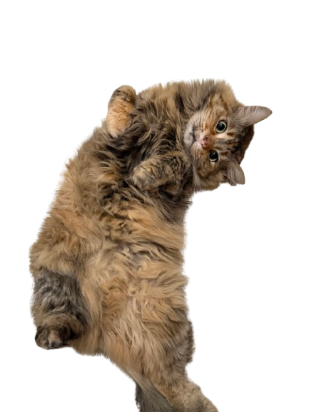
you found her!
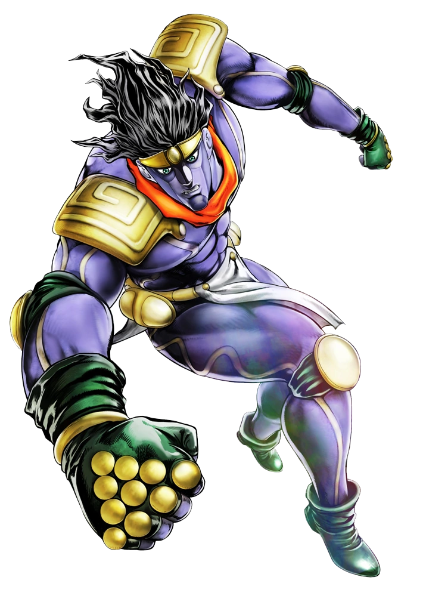
are you sure? this erases all your egg progress.
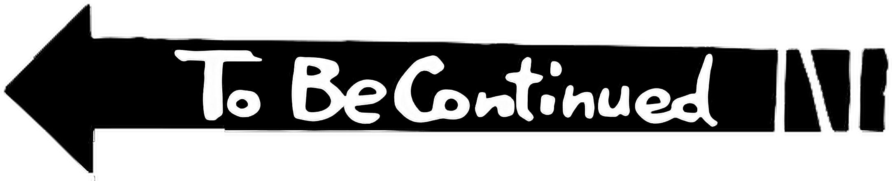
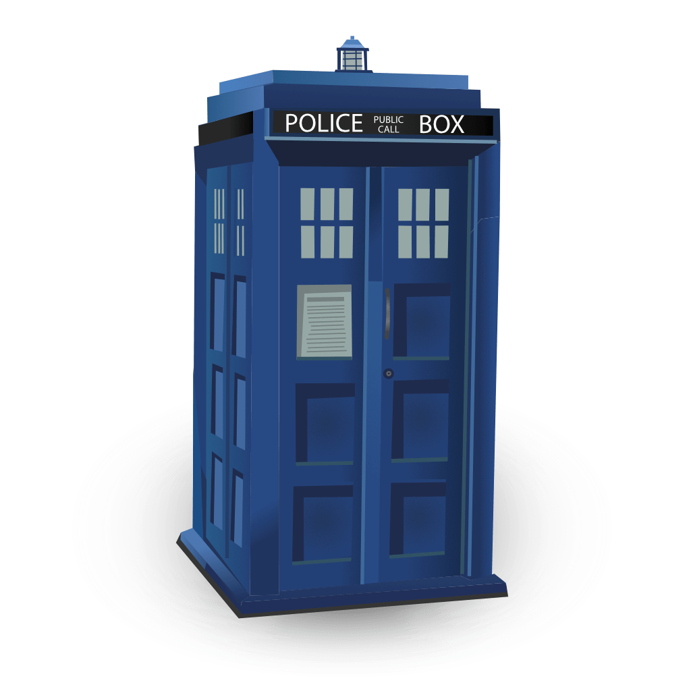
scroll down ↓
Thanks for visiting my site! My name is pronounced like lyle lyle crocodile ;) I'm a student at Scripps College in California studying neuroscience and art.
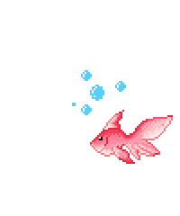
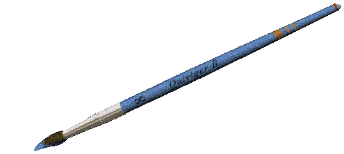
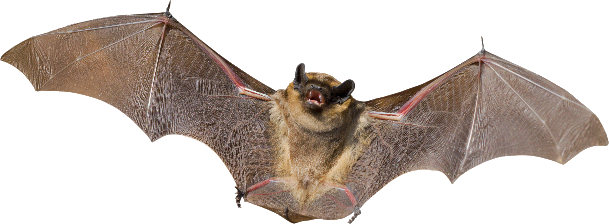
other things
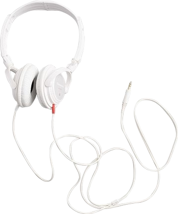
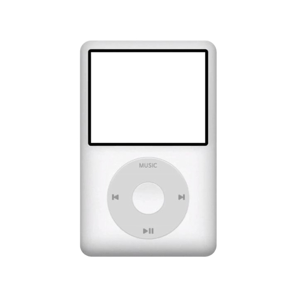
Always happy to chat -- this is the best way to reach me
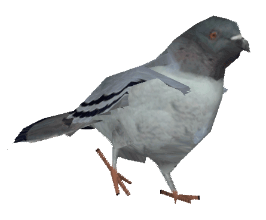
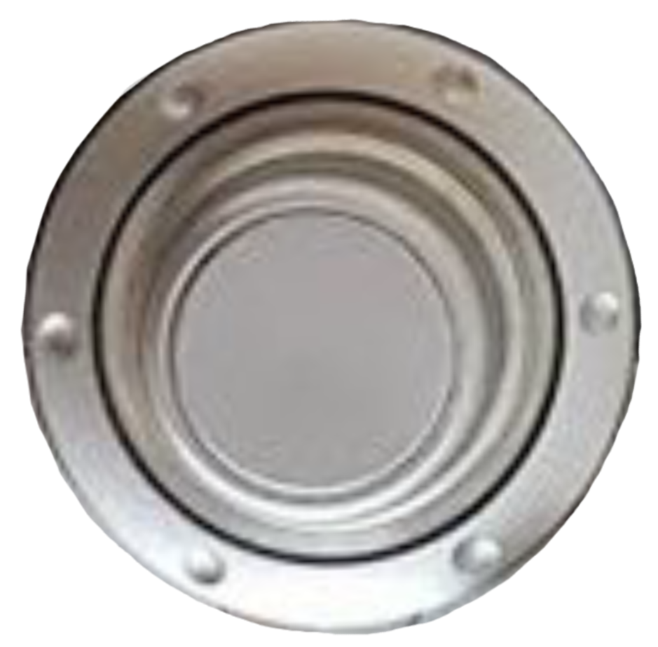

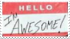
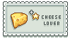
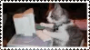
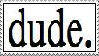
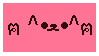

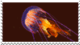
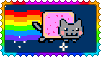
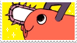
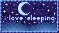
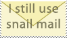
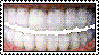